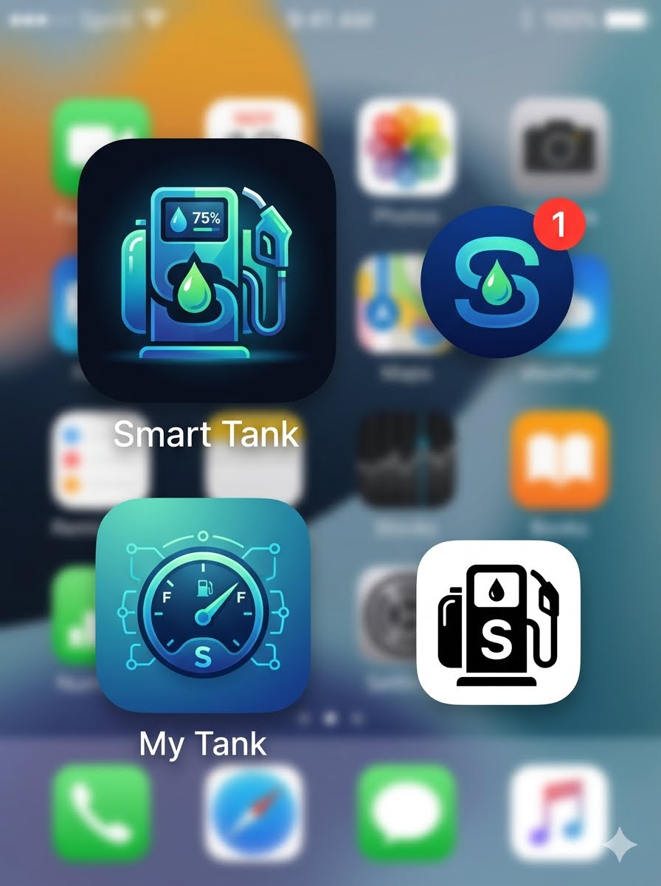
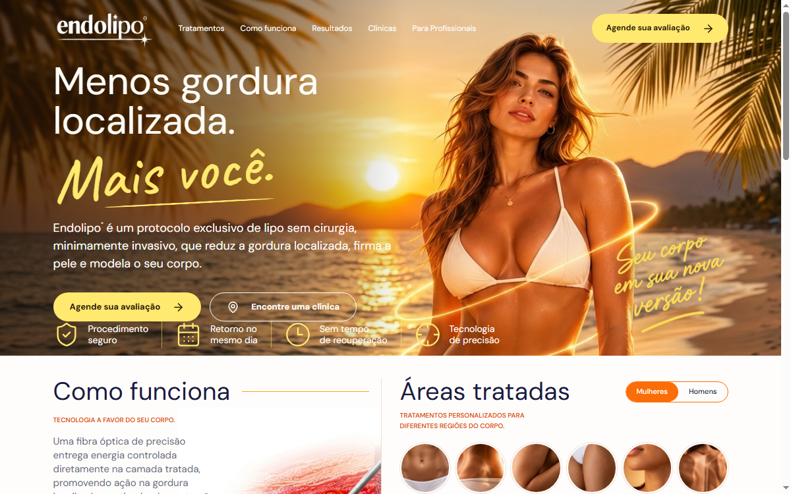
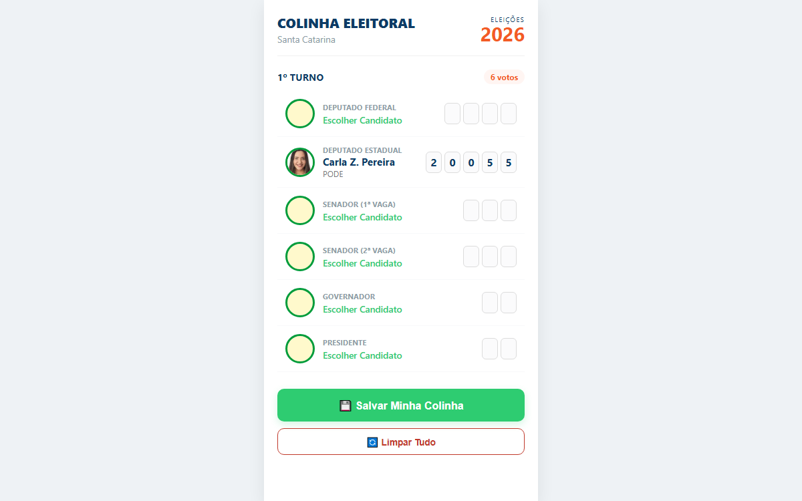
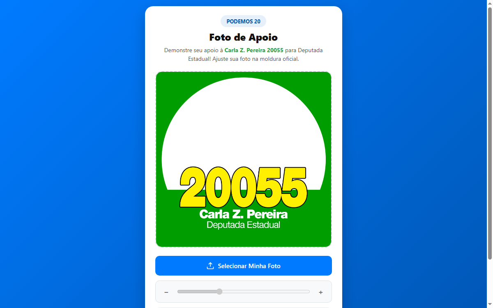
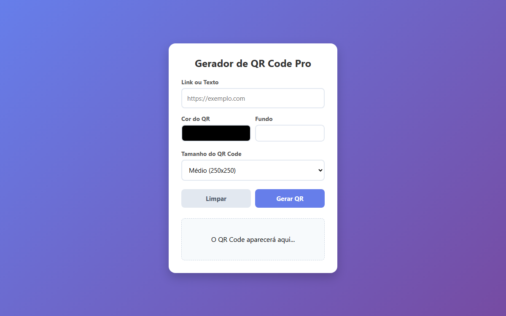
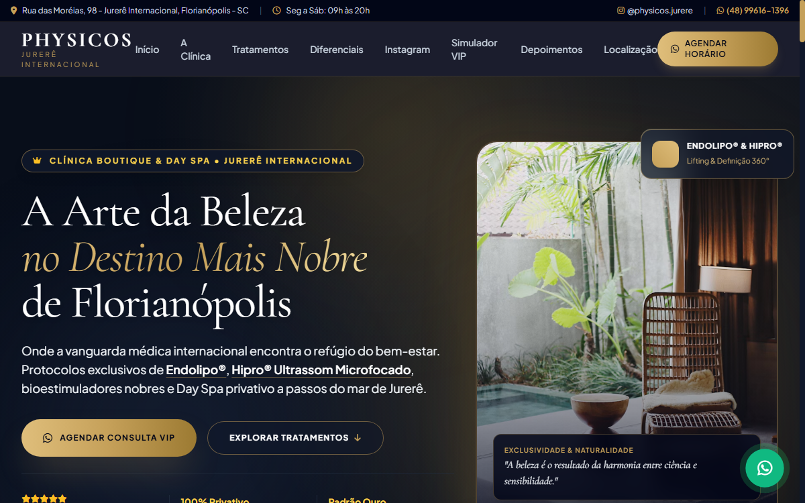

Transformando lógica e dados em soluções digitais de alta performance.
Sou João Carlos Vieira. Uno o rigor técnico da minha formação em Eletrônica (FAB) à agilidade do desenvolvimento web moderno em TypeScript, React, Python e Cloud. Criador de interfaces com foco obsessivo em conversão e usabilidade real.
Fabíola Góes Arquitetura & Habite-se
Plataforma de alta conversão para arquiteta renomada com tráfego real, métricas analíticas e ferramentas interativas.
Engenharia de Conversão & Experiência Imersiva
Desenvolvido com foco total na retenção de leads e experiência do usuário. O projeto conta com:
- ✓ Simulador de Orçamento Interativo: Cálculo dinâmico em tempo real de Habite-se, Projetos Residenciais e Comerciais.
- ✓ Comparador Antes & Depois: Slider dinâmico com proporções fluidas e sincronização visual.
- ✓ Quiz de Estilo Arquitetônico: Questionário gamificado com pré-carregamento no WhatsApp.
- ✓ Google Analytics 4 Integrado: Stream web ativo com rastreamento de eventos customizados de clique e conversão.
Projetos Selecionados
Uma amostra das aplicações construídas em TypeScript, React, Java, Python e ferramentas web.

Smart_Tank
Web App completo para controle de consumo veicular, gestão financeira de combustível, cálculo de média e histórico de abastecimentos integrado ao Supabase.

Endolipo 2.0
Plataforma web de última geração para clínica estética e procedimentos corporais com Tailwind v4, Radix UI e componentes de alta performance.

Colinha Digital SC
Web app prático para eleitores de Santa Catarina pesquisarem, organizarem e salvarem números de candidatos offline no smartphone para o dia da eleição.

Meu Filtro Apoiadores
Ferramenta interativa de enquadramento de foto em molduras com controles de zoom, rotação e exportação instantânea de imagem renderizada em Canvas.

QR Code Free
Gerador rápido e leve de QR Codes customizados com download direto e renderização vetorial, sem necessidade de cadastro ou anúncios intrusivos.
Inventário RPG
Sistema modular em Java com aplicação dos conceitos fundamentais de Orientação a Objetos (Encapsulamento, Polimorfismo e Herança) para gerenciar inventários e atributos de RPG.

Physicos Jurerê
Website institucional completo e responsivo para centro de saúde e treinamento físico em Jurerê (Florianópolis), destacando modalidades, equipe e localização.
Data & Algoritmos
Série de algoritmos para resolução de desafios matemáticos, cálculo de acurácia estatística, estimativa de consumo de combustível e processamento de dados.
Stack Técnica & Ecossistema
Do hardware fundamental ao front-end moderno, passando por back-end robusto e orquestração em nuvem.
Front-end & UI
Construção de interfaces interativas, responsivas e de alta conversão.
- React 19 & 18
- TypeScript & JS (ES6+)
- Tailwind CSS (v3 e v4)
- Radix UI & TanStack Start
- HTML5 Semântico & Canvas
Back-end & Dados
Lógica estruturada, POO, banco de dados e APIs RESTful.
- Python 3 (APIs & Scripts)
- Java (POO & Padrões)
- Supabase & PostgreSQL
- RESTful APIs & Webhooks
- Jupyter Notebook & Análises
Cloud & DevOps
Versionamento, conteinerização, automação e deploy contínuo.
- Git & GitHub Avançado
- Docker & Microsserviços
- Kubernetes & Jenkins (CI/CD)
- Google Cloud & Qwiklabs
- Google Analytics 4 (GA4)
Hardware & Suporte
Base sólida da engenharia física e infraestrutura computacional.
- Especialista Eletrônica (FAB)
- Manutenção de Hardware
- Instrutor de TI (Nível B1)
- Diagnóstico de Redes
- Sistemas Operacionais Linux/Win
Sobre Mim & Trajetória
A combinação de disciplina militar, rigor eletrônico, engenharia de software e criatividade artística.
Análise e Desenvolvimento de Sistemas (ADS)
Universidade do Vale do Itajaí (UNIVALI)
Formação superior com foco em engenharia de software, modelagem de sistemas, orientação a objetos, arquitetura web, cloud computing e governança de tecnologia.
Especialista em Eletrônica (Turma 1998)
Aeronáutica Brasileira
Formação de alta precisão técnica em circuitos eletrônicos, análise de sinais, telecomunicações e disciplina operacional. Essa vivência moldou meu pensamento analítico para resolver bugs complexos na raiz.
Técnico em Computadores & Instrutor B1
Suporte & Capacitação Técnica
Anos de prática em montagem, manutenção corretiva, instalação de sistemas e instrução de computação. Compreensão total da máquina — do hardware físico ao software de alto nível.
Músico (Saxofonista) & Artista Plástico
Tons e Dons Floripa & Feira de Artes de São José
Formação musical na Tons e Dons em Florianópolis e produção de arte em telas com exposições públicas. A música e a pintura trazem harmonia, ritmo e sensibilidade visual aplicados diretamente na criação de interfaces elegantes e intuitivas.
Cursos & Certificações Relevantes
Vamos construir algo incrível juntos?
Seja para o desenvolvimento de uma nova aplicação web, otimização de conversão, consultoria técnica ou projetos full stack. Ficarei feliz em conversar!